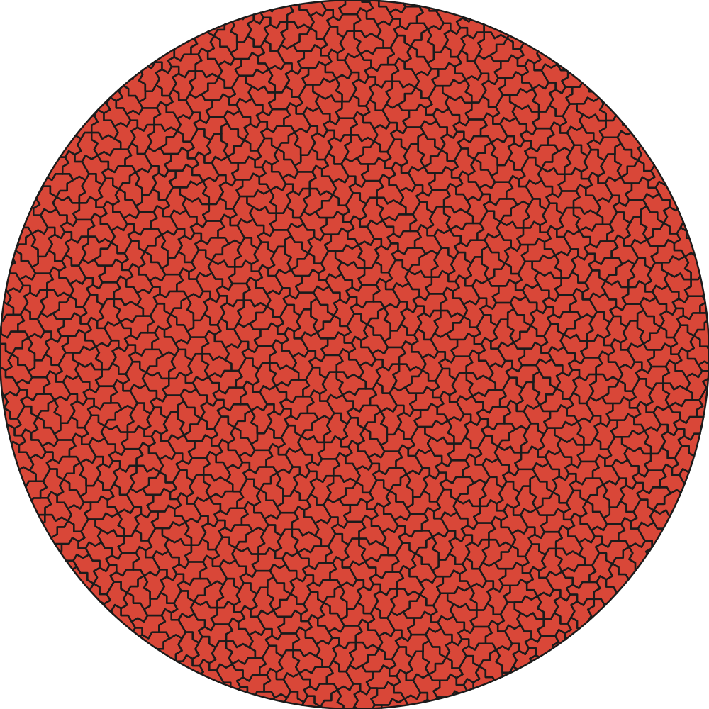

Blender and 3D workflows
Instance tiles in Blender, Houdini, or Three.js for architectural panels, animation, sculpture, and procedural scenes.
Spectre / Tile(1,1) geometry, generated on demand
A production API for deterministic Spectre tilings. Request a circle, rectangle, triangle, square, or other mask, and receive raw geometry ready for SVG tools, Blender, CAD, fabrication, games, and generative art.

Interactive view-only demo
This demo uses pre-generated examples, so it is cheap enough to show publicly. The production API can generate fresh custom geometry for authenticated users.
Practical uses
Instance tiles in Blender, Houdini, or Three.js for architectural panels, animation, sculpture, and procedural scenes.
Export SVG or STL geometry for decorative screens, inlays, wall art, product surfaces, molds, and CNC experiments.
Create non-repeating compositions with stable IDs, deterministic seeds, clipping masks, and compact vector output.
Turn the Spectre monotile story into visual teaching material, posters, exhibits, and interactive explainers.
Build aperiodic motifs for wallpaper, fashion, packaging, embossing, engraving, and repeat-free decorative systems.
Request tilings from scripts, job queues, design tools, or plugins instead of maintaining local substitution code.
API documentation
Send a JSON mask, choose a retention policy, and request the formats your pipeline needs. Jobs return signed URLs for completed artifacts.
{
"scale": 1,
"mask": {"type": "triangle", "center": [0, 0], "side_length": 50},
"retention": "clip",
"formats": ["svg", "json"],
"svg_pixel_target": 500,
"svg_margin": 0,
"svg_compact": true
}Monetization model
The public site can show preloaded examples. Paid API keys unlock larger jobs, batch generation, downloads, commercial support, and integration tooling.
$0
Paid
Custom
Launch-ready foundation
Start with the API, then add the Blender plugin, Adobe workflows, and domain landing pages as the commercial front door.